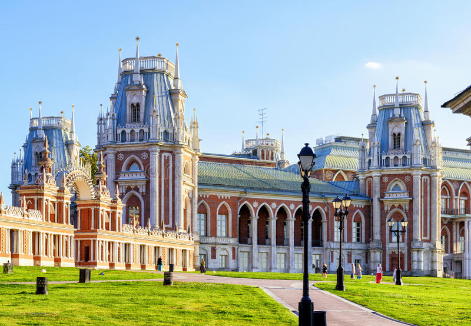

| Назив знаменитости | Кратак опис | Фотографија |
|---|---|---|
| Црвени трг |
Црвени трг (рус. Красная площадь) је најпознатији московски градски трг. Трг одваја Московски Кремљ, некадашњу царску, а данашњу службену резиденцију руског председника, од старе историјске трговачке четврти Китај-город. Како се главне московске улице управо одавде шире у свим смеровима, Црвени трг се често сматра средишњим московским тргом и срцем целе Русије. 1991. године Црвени трг је уврштен на УНЕСКОв попис светске баштине. |
|
| Коломенско |
Коломенско (рус. Коло́менское, енгл. Kolomenskoye) бивши је царски посед који се налази неколико километара југоисточно од средишта Москве, на старој цести која води до старог града Коломне (отуда име). Простире се на 390 хектара површине и има сликовит поглед на стрме обале реке Москве. Коломенско је постало део Москве 1960-их. |
 |
| Храм Христа Спаситеља |
Коломенско (рус. Коло́менское, енгл. Kolomenskoye) бивши је царски посед који се налази неколико Катедрални саборни храм Христа Спаситеља (посвећен Христовом рођењу) је саборни храм Руске православне цркве, недалеко од Московског Кремља, на лијевој обали ријеке Москве. Првобитни храм је подигнут у част побједе руског народа над Наполеоном. На зидовима храма су била исписана имена официра руске војске који су пали у рату с Наполеоновом армадом 1812. и других непосредних битака против Наполеона. |
|
| Споменик Петру Великом |
Споменик Петру Великом подигнут је 1997. године на малом острву на ријеци Московски око километар од Кремља, у центру Москве. Споменик је подигниут у знак сјећања на 300. годишњицу руске морнарице. Овај споменик који је осмислио гружијски вајар Зураб Церетели је један од највиших на свијету. |
|
| Ломоносов |
Московски државни универзитет М. В. Ломоносов (рус. Московский государственный университет имени М. В. Ломоносова) је највећи и најстарији универзитет у Русији, основан 1755. Према подацима из 2004. године, имао је 4000 запослених који су подучавали око 31000 студената и 7000 последипломаца. Тренутни ректор универзитета је професор математике Виктор Антонович Садовничи. |
©Aлександра